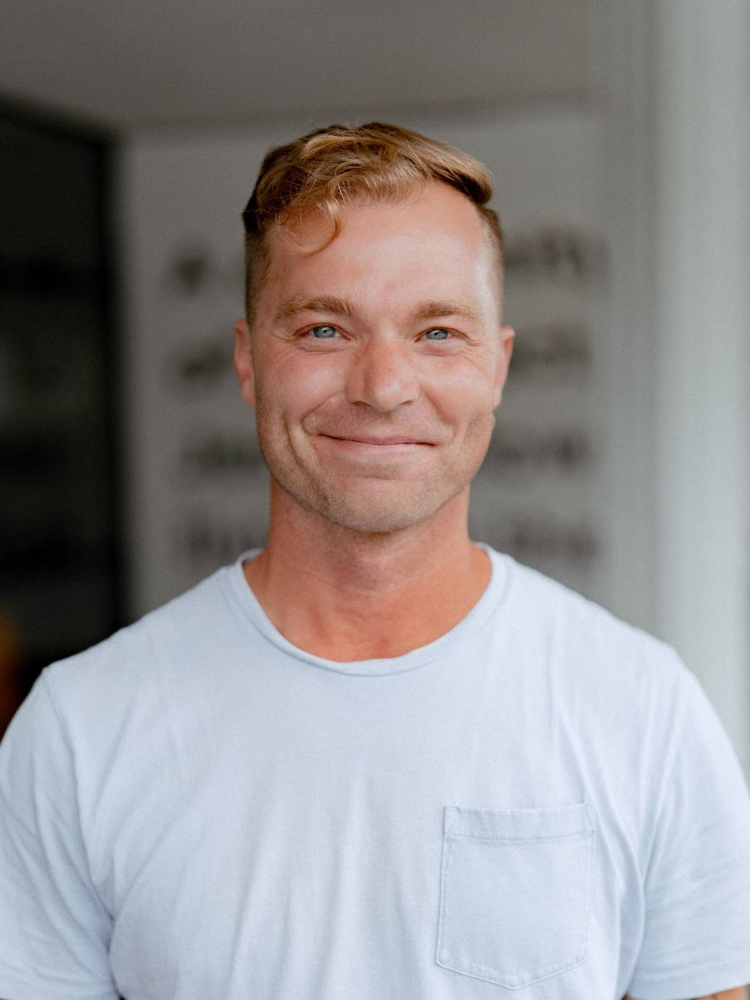

Leaders
Bryan Halferty
Bryan is the lead pastor of Anchor Church: a multi-site church located in Tacoma, Washington.
He’s also the author of Terrible Beauty: a memoir that explores how life’s most challenging moments—failure, fear, and uncertainty—can become unexpected pathways to grace and transformation.

Darrin Brewington
Darrin is the Worship Pastor at Newnan City Church outside Atlanta, GA.
He’s passionate about facilitating spaces where people can encounter Jesus through the Holy Spirit. Darrin is married to his wife Ashley.